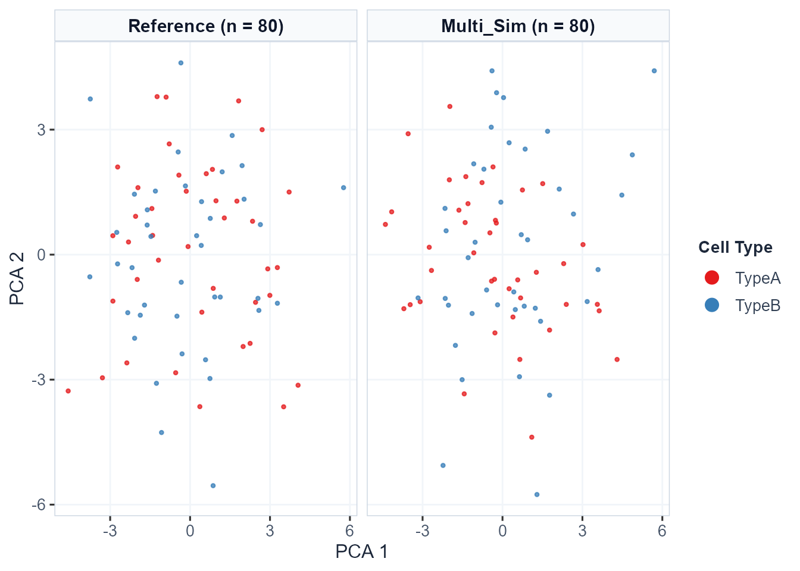

Demonstration 3: Multiomics (scRNA-seq + scATAC-seq) Simulation Evaluation
Source:vignettes/demo-multiomics.Rmd
demo-multiomics.RmdIntroduction
Single-cell multiomics technologies allow simultaneous or parallel measurement of multiple cellular features — most commonly gene expression (scRNA-seq) and chromatin accessibility (scATAC-seq). Simulating multiomics data presents unique challenges because algorithms must preserve not only the distinct statistical properties of each individual modality, but also the biological coupling and regulatory relationships between them.
scSimEval is designed to evaluate simulation fidelity
across two primary multiomics experimental designs,
each tailored to the level of cell-level pairing between modalities:
Paired Multiomics (co-assay profiling of identical
individual cells) and Unpaired Multiomics (independent
profiling of separate cells from the same biological system).
Understanding which design your simulated data belongs to is essential
for selecting the correct evaluation functions.
Part 1: Understanding Multiomics Data Types
1.1 Paired Multiomics (Co-assay)
Definition: Both scRNA-seq and scATAC-seq are measured simultaneously from the exact same individual cells. Each cell barcode in the RNA matrix has a corresponding and biologically meaningful entry at the same column index in the ATAC matrix.
Technologies: 10x Chromium Multiome, SHARE-seq, SNARE-seq, Paired-seq, ASTAR-seq
Simulators: scMultiSim (Li et al., Nat Methods 2023), SymSim2+ATAC, MultiSim
What scSimEval can evaluate:
- ✅ Full unimodal evaluation for each modality (Categories 1–5, 7, and 8)
- ✅ All Category 6 multiomics integration &
alignment metrics (
evaluate_multiomics_integration()):-
batch_asw(Batch Average Silhouette Width in joint embedding space) -
cell_type_asw(Cell-Type Average Silhouette Width in joint embedding space) -
graph_connectivity(Within-cell-type k-NN graph connectivity) -
ari(Adjusted Rand Index on joint latent clustering) -
nmi(Normalized Mutual Information on joint latent clustering)
-
1.2 Unpaired Multiomics (Independent profiling)
Definition: scRNA-seq and scATAC-seq are profiled from different cells derived from the same biological tissue, cell line, or sample. Cell barcodes do not correspond between modalities — column i of the RNA matrix and column i of the ATAC matrix represent entirely different cells.
Technologies: Bulk ATAC + scRNA-seq, independent 10x scATAC + scRNA experiments on the same tissue, sci-ATAC-seq paired with scRNA-seq on sibling aliquots
Simulators: scDesign3, scMultiSim, scCross
What scSimEval can evaluate:
- ✅ Full unimodal evaluation for each modality independently (Categories 1–5, 7, and 8)
- ✅ Joint-embedding multiomics integration metrics (Category 6) when
pre-integrated embeddings (
integratedorpca) are supplied on the combined multiomics object viapairing = "unpaired"inevaluate_multiomics_accuracy().
1.3 Metric Compatibility Summary
| Metric / Function | Paired | Unpaired |
|---|---|---|
evaluate_simulation_accuracy() per modality |
✅ | ✅ |
evaluate_clustering_metrics() |
✅ | ✅ |
evaluate_batch_metrics() |
✅ | ✅ |
evaluate_deg_fidelity() |
✅ | ✅ |
evaluate_trajectory_metrics() (scRNA-seq
only)
|
✅ | ✅ |
evaluate_multiomics_integration() |
✅ | ✅ (via joint embedding) |
evaluate_multiomics_accuracy() |
✅ (pairing = "paired") |
✅ (pairing = "unpaired") |
Part 2: Evaluating Paired Multiomics
2.1 Loading the Example Paired Dataset
scSimEval includes a paired scRNA-seq + scATAC-seq
dataset (example_multiomics) where every column in the RNA
matrix corresponds to the same cell in the ATAC matrix:
library(scSimEval)
# Load packaged paired multiomics example dataset
data(example_multiomics)
cat("Reference RNA dimensions:", dim(example_multiomics$ref_multi$rna), "\n")
#> Reference RNA dimensions: 60 80
cat("Reference ATAC dimensions:", dim(example_multiomics$ref_multi$atac), "\n")
#> Reference ATAC dimensions: 60 80
cat("Simulated RNA dimensions:", dim(example_multiomics$sim_multi$rna), "\n")
#> Simulated RNA dimensions: 60 80
cat("Simulated ATAC dimensions:", dim(example_multiomics$sim_multi$atac), "\n")
#> Simulated ATAC dimensions: 60 80
cat("Cell types:", levels(example_multiomics$cell_types), "\n")
#> Cell types: TypeA TypeBThe dataset contains:
-
ref_multi: Named listrna(count matrix) andatac(peak accessibility matrix), both measured from the same cells. -
sim_multi: Simulated pairedrnaandatacmatrices. -
cell_types: Cell type annotations shared across both modalities. -
batch_info: Batch labels shared across both modalities. -
resource_stats: Hardware logs (runtime in seconds and peak RAM in MiB).
2.2 Multiomics Integration & Alignment (Category VI)
Category VI evaluates multiomics integration and biological
preservation using gold-standard metrics from scib,
scMultiSim, scCross, Matilda, and
scMoMtF:
int_res <- evaluate_multiomics_integration(
ref_multi = example_multiomics$ref_multi,
sim_multi = example_multiomics$sim_multi,
cell_types = example_multiomics$cell_types,
batch_info = example_multiomics$batch_info,
verbose = FALSE
)
print(int_res$integration_summary_table)
#> Category Property
#> 1 (VI) Multiomics Integration & Alignment multiomics_integration
#> 2 (VI) Multiomics Integration & Alignment multiomics_integration
#> 3 (VI) Multiomics Integration & Alignment multiomics_integration
#> 4 (VI) Multiomics Integration & Alignment multiomics_integration
#> 5 (VI) Multiomics Integration & Alignment multiomics_integration
#> Metric Value Modality
#> 1 batch_asw 0.9762642 Joint (Cross-Modal)
#> 2 cell_type_asw 0.5582026 Joint (Cross-Modal)
#> 3 graph_connectivity 1.0000000 Joint (Cross-Modal)
#> 4 ari 0.6765538 Joint (Cross-Modal)
#> 5 nmi 0.5821401 Joint (Cross-Modal)2.3 Master Paired Pipeline:
evaluate_multiomics_accuracy()
For fully paired data, the master function coordinates all 8 categories:
master_eval <- evaluate_multiomics_accuracy(
ref_multi = example_multiomics$ref_multi,
sim_multi = example_multiomics$sim_multi,
cell_types = example_multiomics$cell_types,
elapsed_time = example_multiomics$resource_stats$elapsed_time,
memory_mb = example_multiomics$resource_stats$memory_mb,
verbose = FALSE
)
head(master_eval$benchmark_summary_table)
#> Category Property Metric Value Modality
#> 1 Distributional Properties library_size Wasserstein 15.0625000000 rna
#> 2 Distributional Properties library_size KS 0.2125000000 rna
#> 3 Distributional Properties library_size MAD 15.0000000000 rna
#> 4 Distributional Properties library_size Bhattacharyya 0.0001188839 rna
#> 5 Distributional Properties library_size Runs_Statistic -1.7447479960 rna
#> 6 Distributional Properties library_size NN_Mismatch 0.1750000000 rnaParallel Multi-Core Acceleration (
threads): On multi-core systems or HPC nodes, setthreads = 4orthreads = 8to accelerate the dual unimodal layer evaluations and Category 6 cross-modal correlation computations across CPU worker threads viaBiocParallel.
Part 3: Evaluating Unpaired Multiomics
For unpaired data, scRNA-seq and scATAC-seq come from different cells. The recommended workflow is to evaluate each modality independently and combine results.
3.1 Step-by-Step Workflow for Unpaired Data
library(scSimEval)
data(example_scrna) # RNA modality
data(example_scatac) # ATAC modality (different cells)
# ── Step 1: Evaluate each modality independently ──────────────────────────────
rna_eval <- evaluate_simulation_accuracy(
ref_data = example_scrna$ref,
sim_data = example_scrna$sim,
compute_bivariate = FALSE,
verbose = FALSE
)
atac_eval <- evaluate_simulation_accuracy(
ref_data = example_scatac$ref,
sim_data = example_scatac$sim,
compute_bivariate = FALSE,
verbose = FALSE
)
# ── Step 2: Consolidate and compare across modalities ─────────────────────────
dataset_collection <- list(
"Method_A-RNA" = list(ref = example_scrna$ref, sim = example_scrna$sim),
"Method_A-ATAC" = list(ref = example_scatac$ref, sim = example_scatac$sim)
)
consolidated <- evaluate_multiple_datasets(
datasets = dataset_collection,
pair_by_prefix = TRUE,
compute_bivariate = FALSE,
verbose = FALSE
)
print(consolidated$dataset_overview)Part 4: Visualization
scSimEval visualization functions work seamlessly across
unimodal, paired, and unpaired multiomics configurations:
# Multi-dataset consolidated benchmark bubble matrix
plot_benchmark_bubble_matrix(
data = consolidated,
title = "Benchmarking Multiomics Simulators"
)
# Evaluation summary horizontal bar matrix
plot_evaluation_summary(
data = consolidated,
title = "Multiomics Simulator Leaderboard"
)4.1 Low-Dimensional Multiomics Cell Embeddings
To visually examine whether simulated cells maintain the biological manifold of empirical data across modalities, researchers can project reference and simulated cells into low-dimensional UMAP, t-SNE, or PCA coordinates:
# Compute low-dimensional embeddings for the scRNA-seq modality
emb_rna <- compute_dataset_embeddings(
reference = example_multiomics$ref_multi$rna,
simulated = list("Multi_Sim" = example_multiomics$sim_multi$rna),
reduction = "pca",
n_pcs = 5,
cell_types = example_multiomics$cell_types
)
# Plot multiomics cell embeddings
plot_dataset_embeddings(
embedding_data = emb_rna,
reduction = "pca",
layout = "side_by_side",
color_by = "cell_type"
)
# Quantitative embedding quality metrics
knitr::kable(compute_embedding_quality_metrics(emb_rna), digits = 4)| Dataset | Role | Cells (N) | Mean Silhouette | ARI (Cluster Fidelity) | Mean Library Size | Mean Detected Features | Library Size Diff (%) |
|---|---|---|---|---|---|---|---|
| Reference | Reference | 80 | -0.0101 | -0.0027 | 256.3 | 49.2 | 0.00 |
| Multi_Sim | Simulated | 80 | 0.0037 | -0.0071 | 242.3 | 48.3 | 5.46 |
Part 5: Summary
| Data Type | Example Technologies | evaluate_multiomics_accuracy() |
Category 6 Metrics | Recommended Function |
|---|---|---|---|---|
| Paired | 10x Multiome, SHARE-seq | ✅ pairing = "paired"
|
All 5 Category VI integration metrics
(batch_asw, cell_type_asw,
graph_connectivity, ari,
nmi) |
evaluate_multiomics_accuracy(..., pairing = "paired") |
| Unpaired | Independent scRNA + scATAC | ✅ pairing = "unpaired"
|
Joint-embedding integration metrics + per-modality unimodal evaluation | evaluate_multiomics_accuracy(..., pairing = "unpaired") |
sessionInfo()
#> R version 4.6.1 (2026-06-24 ucrt)
#> Platform: x86_64-w64-mingw32/x64
#> Running under: Windows 11 x64 (build 26300)
#>
#> Matrix products: default
#> LAPACK version 3.12.1
#>
#> locale:
#> [1] LC_COLLATE=English_India.utf8 LC_CTYPE=English_India.utf8
#> [3] LC_MONETARY=English_India.utf8 LC_NUMERIC=C
#> [5] LC_TIME=English_India.utf8
#>
#> time zone: Asia/Calcutta
#> tzcode source: internal
#>
#> attached base packages:
#> [1] stats graphics grDevices utils datasets methods base
#>
#> other attached packages:
#> [1] scSimEval_0.99.10
#>
#> loaded via a namespace (and not attached):
#> [1] fs_2.1.0 matrixStats_1.5.0
#> [3] spatstat.sparse_3.2-0 httr_1.4.9
#> [5] RColorBrewer_1.1-3 ggsci_5.2.0
#> [7] tools_4.6.1 sctransform_0.4.3
#> [9] R6_2.6.1 uwot_0.2.5
#> [11] withr_3.0.3 sp_2.2-3
#> [13] gridExtra_2.3.1 progressr_1.0.0
#> [15] cli_3.6.6 Biobase_2.73.2
#> [17] textshaping_1.0.5 spatstat.explore_3.8-3
#> [19] fastDummies_1.7.6 labeling_0.4.3
#> [21] sass_0.4.10 Seurat_5.5.1
#> [23] S7_0.2.2 spatstat.data_3.1-9
#> [25] readr_2.2.0 proxy_0.4-29
#> [27] ggridges_0.5.7 pbapply_1.7-5
#> [29] pkgdown_2.2.1 systemfonts_1.3.2
#> [31] dichromat_2.0-1 scater_1.41.2
#> [33] parallelly_1.48.0 limma_3.99.0
#> [35] MLmetrics_1.1.3 RSQLite_3.53.3
#> [37] generics_0.1.4 ica_1.0-3
#> [39] spatstat.random_3.5-2 dplyr_1.2.1
#> [41] Matrix_1.7-6 ggbeeswarm_0.7.3
#> [43] S4Vectors_0.51.10 abind_1.4-8
#> [45] lifecycle_1.0.5 yaml_2.3.12
#> [47] edgeR_4.99.6 SummarizedExperiment_1.43.0
#> [49] SparseArray_1.13.2 BiocFileCache_3.3.0
#> [51] provenance_4.4 Rtsne_0.17
#> [53] grid_4.6.1 blob_1.3.0
#> [55] dqrng_0.4.1 promises_1.5.0
#> [57] crayon_1.5.3 miniUI_0.1.2
#> [59] lattice_0.22-9 dynwrap_1.3.0
#> [61] beachmat_2.29.3 cowplot_1.2.0
#> [63] dynfeature_1.0.1 metapod_1.21.0
#> [65] pillar_1.11.1 knitr_1.52
#> [67] GenomicRanges_1.65.4 boot_1.3-32
#> [69] future.apply_1.20.2 kSamples_1.2-12
#> [71] codetools_0.2-20 glue_1.8.1
#> [73] spatstat.univar_3.2-0 remotes_2.5.0
#> [75] clusterSim_0.51-6 data.table_1.18.6.1
#> [77] dynparam_1.0.2 vctrs_0.7.3
#> [79] CDI_1.11.0 png_0.1-9
#> [81] spam_2.11-4 Rdpack_2.6.6
#> [83] testthat_3.3.2 gtable_0.3.6
#> [85] assertthat_0.2.1 cachem_1.1.0
#> [87] xfun_0.60 rbibutils_2.4.1
#> [89] S4Arrays_1.13.0 mime_0.13
#> [91] Seqinfo_1.3.2 coda_0.19-4.1
#> [93] reformulas_0.4.4 survival_3.8-12
#> [95] SingleCellExperiment_1.35.2 statmod_1.5.2
#> [97] bluster_1.23.1 fitdistrplus_1.2-6
#> [99] ROCR_1.0-12 nlme_3.1-171
#> [101] dynutils_1.0.12 eva_0.2.7
#> [103] bit64_4.8.6 filelock_1.0.3
#> [105] RcppAnnoy_0.0.23 dyneval_0.9.9
#> [107] bslib_0.12.0 irlba_2.3.7
#> [109] waddR_1.27.0 vipor_0.4.7
#> [111] KernSmooth_2.23-26 otel_0.2.0
#> [113] BiocGenerics_0.59.12 DBI_1.3.0
#> [115] ade4_1.7-24 processx_3.9.0
#> [117] carrier_0.3.0.4 tidyselect_1.2.1
#> [119] proxyC_0.5.2 bit_4.6.0
#> [121] compiler_4.6.1 curl_8.0.0
#> [123] httr2_1.3.0 BiocNeighbors_2.7.3
#> [125] randtests_1.0.2 desc_1.4.3
#> [127] DelayedArray_0.39.8 plotly_4.12.1
#> [129] scales_1.4.0 lmtest_0.9-40
#> [131] stringr_1.6.0 digest_0.6.39
#> [133] goftest_1.2-3 spatstat.utils_3.2-5
#> [135] minqa_1.2.8 rmarkdown_2.32
#> [137] XVector_0.52.0 RhpcBLASctl_0.23-42
#> [139] htmltools_0.5.9 pkgconfig_2.0.3
#> [141] lme4_2.0-6 MatrixGenerics_1.25.0
#> [143] dbplyr_2.6.0 fastmap_1.2.0
#> [145] rlang_1.3.0 htmlwidgets_1.6.4
#> [147] shiny_1.14.0 SuppDists_1.1-9.9
#> [149] farver_2.1.2 jquerylib_0.1.4
#> [151] zoo_1.9-1 jsonlite_2.0.0
#> [153] BiocParallel_1.47.0 mclust_6.1.3
#> [155] BiocSingular_1.29.1 magrittr_2.0.5
#> [157] scuttle_1.23.2 dotCall64_1.2
#> [159] patchwork_1.3.2 Rcpp_1.1.2
#> [161] viridis_0.6.5 reticulate_1.47.0
#> [163] stringi_1.8.9 brio_1.1.5
#> [165] MASS_7.3-66 plyr_1.8.9
#> [167] parallel_4.6.1 listenv_1.0.0
#> [169] ggrepel_0.9.8 deldir_2.0-4
#> [171] splines_4.6.1 tensor_1.5.1
#> [173] hms_1.1.4 locfit_1.5-9.12
#> [175] ranger_0.18.0 igraph_2.3.3
#> [177] babelwhale_1.2.0 spatstat.geom_3.8-3
#> [179] RcppHNSW_0.7.0 reshape2_1.4.5
#> [181] stats4_4.6.1 ScaledMatrix_1.21.0
#> [183] philentropy_0.10.0 evaluate_1.0.5
#> [185] SeuratObject_5.4.0 scran_1.41.1
#> [187] RcppParallel_6.2.1 IsoplotR_7.0
#> [189] tzdb_0.5.0 nloptr_2.2.1
#> [191] httpuv_1.6.17 RANN_2.6.3
#> [193] tidyr_1.3.2 purrr_1.2.2
#> [195] polyclip_1.10-7 future_1.76.0
#> [197] scattermore_1.2 ggplot2_4.0.3
#> [199] CellMixS_1.29.0 rsvd_1.0.5
#> [201] xtable_1.8-8 e1071_1.7-17
#> [203] RSpectra_0.16-2 later_1.4.8
#> [205] viridisLite_0.4.3 class_7.3-24
#> [207] ragg_1.5.2 arm_1.15-3
#> [209] tibble_3.3.1 memoise_2.0.1
#> [211] beeswarm_0.4.0 IRanges_2.47.5
#> [213] cluster_2.1.8.3 globals_0.19.1